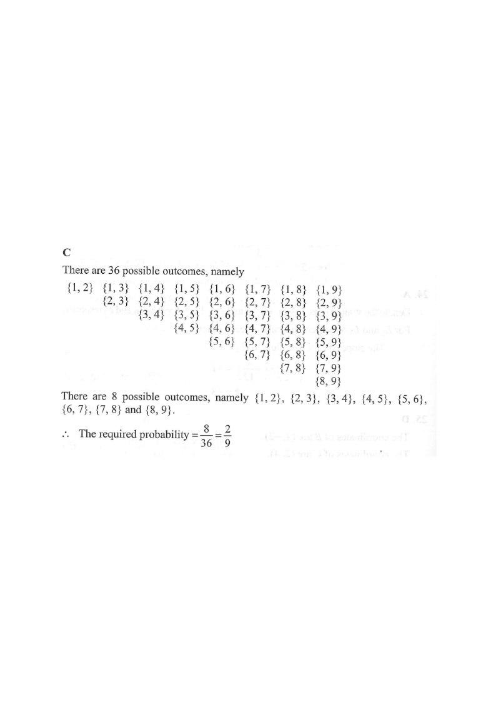

Step 1 — Nine balls numbered 1 to 9; choose 2 at the same time.
HKDSE 2019 · Paper 2 · Q28
14. Probability
Question. Two numbers are randomly drawn at the same time from nine balls numbered
\(1,2,3,4,5,6,7,8\) and \(9\) respectively. Find the probability that the two numbers drawn are
consecutive integers.
A. $\dfrac{1}{2}$
B. $\dfrac{1}{4}$
C. $\dfrac{2}{9}$
D. $\dfrac{7}{9}$

Figure (original exam diagram)
1Model the sample space.
Nine balls are numbered \(1\) to \(9\). Two are drawn at the same time, so order does not matter —
each outcome is a 2-element subset \(\{a,b\}\) with \(a\ne b\).
Hint: "at the same time" ⇒ unordered pairs ⇒ combination counting.
2Count all possible outcomes.
Number of ways to choose 2 balls from 9:
\[ n(S)={}^{9}C_{2}=\frac{9\times 8}{2}=36. \]
Hint: total outcomes = \(36\) (matches the table in the official solution).
3Count the favourable outcomes.
The two numbers must be consecutive integers: \(\{1,2\},\{2,3\},\{3,4\},\{4,5\},\{5,6\},\{6,7\},\{7,8\},\{8,9\}\).
These are exactly the adjacent pairs on the number line \(1\!-\!2\!-\!3\!-\!\cdots\!-\!9\).
There are \(9-1=8\) such gaps.
\[ n(E)=8. \]
Hint: the "diagonal band" in the table = the 8 consecutive pairs.
4Apply the probability formula.
\[ P(E)=\frac{n(E)}{n(S)}=\frac{8}{36}=\frac{2}{9}. \]
(Quick check: \(P(E)+P(E')=\tfrac{2}{9}+\tfrac{7}{9}=1\), and option D, \(\tfrac79\), is the complement —
a common trap.)
Hint: always simplify the fraction, and re-read whether the question asks for "consecutive" or "not consecutive".